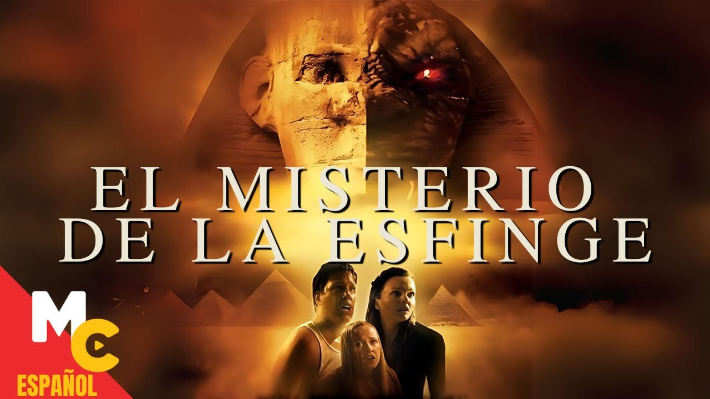
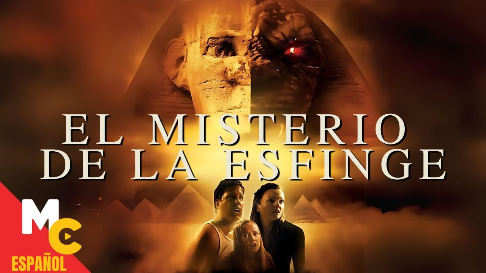

Acción
Animacion
Ciencia ficcion
Cine mexicano
Comedia
Fantacia
Mexicanas
Musicales
Románticas
Series
Suspenso
Terror
| Acción |
 |
||||
| Animaciónes |
 |
||||
| Ciencia |
|  | ||||
| Cine de oro mexicano |
| DILZ.JJ | Acción |
Animacion |
Ciencia ficcion |
Cine mexicano |
Comedia |
Fantacia |
Mexicanas |
Musicales |
Románticas |
Series |
Suspenso |
Terror |
||||||||||||||||||
|---|---|---|---|---|---|---|---|---|---|---|---|---|---|---|---|---|---|---|---|---|---|---|---|---|---|---|---|---|---|---|
| Acción |
| |
||||
| Animaciónes |
| |
||||
| Ciencia |
|  | ||||
| Cine de oro mexicano |